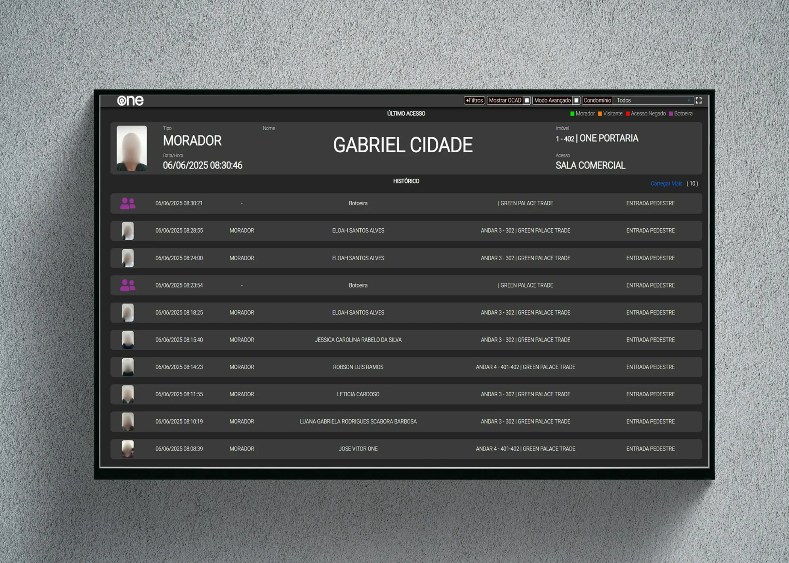
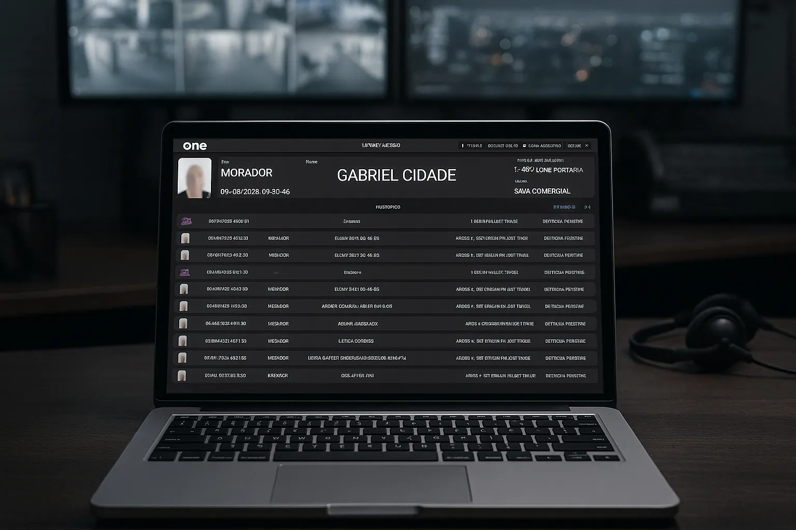

One Acessos
🚨 Transforme a Gestão de Acessos com o Dashboard de Controle Inteligente
Imagine ter todas as informações críticas de acesso em tempo real, com clareza, agilidade e segurança. É isso que a One Acessos oferece para empresas de segurança patrimonial que atuam em condomínios residenciais e empresariais utilizando a tecnologia da One.
🔍 Visualização Imediata e Clara
Veja em destaque o último acesso realizado, com nome, tipo de pessoa (morador, visitante, funcionário), horário exato e ponto de entrada ou saída. Tudo isso com fotos e ícones intuitivos, que facilitam a tomada de decisão em segundos.
📜 Histórico Detalhado
Tenha o registro completo dos últimos acessos realizados, com data, hora, tipo de usuário, nome completo, unidade, condomínio e local do evento (portão, eclusa, entrada pedestre, etc). Informações essenciais sempre à mão para auditorias ou investigações.
👥 Identificação Visual Instantânea
Fotos e cores diferenciadas para moradores, visitantes, funcionários e acessos negados permitem que operadores identifiquem rapidamente qualquer tipo de movimentação, aumentando a segurança e reduzindo riscos.
📈 Eficiência Operacional
Menos tempo procurando informações e mais foco na ação. Com esse painel, o operador de portaria atua com eficiência e controle total, minimizando erros e acelerando respostas a eventos suspeitos.
🛡️ Ideal para condomínios modernos
Projetado especialmente para empresas de portaria remota, controle de acesso e monitoramento inteligente, o dashboard se adapta a diferentes tipos de empreendimentos, do residencial ao corporativo.
Tecnologias
A One Acessos foi um projeto construído do zero, utilizando no front-end:
- HTML
- CSS
- JavaScript
- jQuery
- WebSocket
E no back-end:
- NodeJS
- WebSocket
- SQL (SQLServer)
Minha contribuição e desafios
Após a ideia e esboço do CEO, desenvolvi o painel inteiramente sozinho, fazendo a engenharia e completo desenvolvimento do painel (backend e frontend) em apenas 2 meses.
Tambem fui responsavel por testar e implantar o sistema nos primeiros clientes, afim de averiguar o bom funcionamento e documentar os processos para implantação.
←Voltar ao portfólio